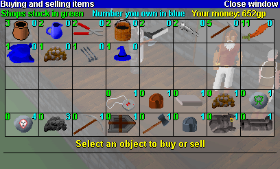

|
RuneScape shops
Scattered throughout RuneScape there are many shops where you can buy and sell items. Most
shops will specialise in a certain type of item. For instance, the sword shop will only buy
and sell swords. In addition to the specialist shops there are several "General stores" which
will buy and sell almost anything. However, items in the general stores normally cost
slightly more, and they will pay less for items that you sell to them. If you take the
trouble to find the right shop you can often get a better deal.
To access the shop you must talk to the shop-keeper in the store and choose the conversation
option to indicate that you wish to buy or sell. A screen like the one shown on the next page
will appear.

This window shows all the items you can buy and sell at the current shop. In the example here
the player is using a general store which means that there is a variety of different items
shown.
Next to each item there are two numbers. The green number indicates the number that the shop
has in stock that are available for purchase. The blue number indicates the number that you
are holding, which you could sell back to the shop.
Click on an item with the left mouse button. The item will be highlighted, and the purchase
and sale prices will be indicated at the bottom of the screen. These two prices will not be
the same since the shop buys at a lower price than it sells out (the shopkeeper is making a
hefty profit!). You can then choose to buy or sell the item by clicking on the relevant
buttons.
The price of items in the shop also depends on the current stock. If a shop has 500 swords in
store it will sell them at a reduced rate to try and clear stock, however it will also pay
less for them if you are selling.
|